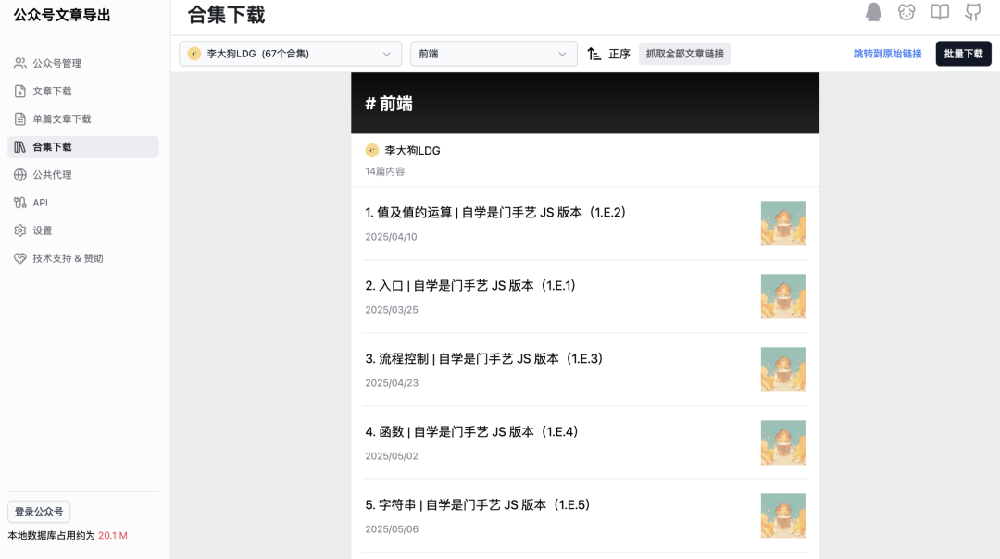

基于我的公众号以及部分网络资料生成的「李大狗LDG 合集：独立黑客成长指南」：
https://notebook.leeduckgo.com
「数据」是 AI 时代的「重要生产资料」。然而，数据和其他生产资料有一个非常大的不同 ——
同一份数据，因为它「怎么被使用、被谁使用、用到什么场景里」，可能产生极低的价值，也可能产生极高的价值。
换句话说，数据的价值不是线性的「斤两」，而更像一个被「能力与场景」撬动的杠杆——它的上限很高，下限也很低，中间差的往往不是数据本身，而是 把数据变成生产力的整套能力。
以「公众号文章」为例，如果我只是常规地把公众号文章（这也算数据）放在公众号里，那么这些数据发挥的是其「常规价值」；如果我将其导出、整理、通过 DAG 的方式和大模型结合起来，这些数据在 AI 的撬动下增加了无限想象空间。
本文正是这样一篇指南，分享我是如何将公众号的内容导入到 NotebookLM，使数据升级为「数据 + LLM」的。
第一步：通过采集工具将文章下载到本地
工具地址：https://down.mptext.top/
工具仓库地址：https://github.com/wechat-article/wechat-article-exporter
公众号文档导出：
基于合集进行下载：

点击「抓取文章全部链接」同步最新内容 ，然后再点击「批量下载」。
第二步：本地数据处理
HTML 文件存在不方便阅读的问题，因此我们选择的方案是将文章转换为 PDF 格式，然后再将同一类别下的所有 PDF 文件进行合并处理。
2.1 HTML 转换为 PDF
Prompt：
我想使用 Python 工具批量将本地 HTML 转换为 PDF 文件。
安装 packages：
pip install playwright
playwright install chromium
运行脚本：
import asyncio
from pathlib import Path
from urllib.parse import urljoin
from playwright.async_api import async_playwright
INPUT_DIR = Path("./html") # 放 .html 的目录
OUTPUT_DIR = Path("./pdf") # 输出目录
GLOB_PATTERN = "**/*.html" # 支持子目录
# 可选：统一页边距、格式
PDF_OPTIONS = dict(
format="A4",
print_background=True,
margin={"top": "12mm", "right": "12mm", "bottom": "12mm", "left": "12mm"},
)
asyncdef main():
OUTPUT_DIR.mkdir(parents=True, exist_ok=True)
html_files = sorted(INPUT_DIR.glob(GLOB_PATTERN))
ifnot html_files:
print(f"No html files found in: {INPUT_DIR.resolve()}")
return
asyncwith async_playwright() as p:
browser = await p.chromium.launch()
page = await browser.new_page()
for html_path in html_files:
# 保持子目录结构
rel = html_path.relative_to(INPUT_DIR)
out_path = OUTPUT_DIR / rel.with_suffix(".pdf")
out_path.parent.mkdir(parents=True, exist_ok=True)
file_url = html_path.resolve().as_uri()
try:
await page.goto(file_url, wait_until="networkidle")
await page.pdf(path=str(out_path), **PDF_OPTIONS)
print(f"OK : {rel} -> {out_path.relative_to(OUTPUT_DIR)}")
except Exception as e:
print(f"FAIL: {rel} ({e})")
await browser.close()
if __name__ == "__main__":
asyncio.run(main())
2.2 合并同一分类下的 PDF
Prompt：
我想使用 Python 脚本将某个目录以及其子目录下的所有 pdf 文件进行合并。
安装 packages：
pip install pypdf
脚本文件：
from __future__ import annotations
import argparse
from pathlib import Path
from pypdf import PdfReader, PdfWriter
def merge_pdfs(input_dir: Path, output_pdf: Path, strict: bool = False) -> None:
input_dir = input_dir.expanduser().resolve()
output_pdf = output_pdf.expanduser().resolve()
output_pdf.parent.mkdir(parents=True, exist_ok=True)
pdf_paths = sorted(p for p in input_dir.rglob("*.pdf") if p.is_file())
ifnot pdf_paths:
raise SystemExit(f"No PDF files found under: {input_dir}")
writer = PdfWriter()
open_handles = [] # 保持文件句柄到写出结束，避免懒加载导致的“关文件后页对象失效”
skipped = []
for p in pdf_paths:
try:
f = open(p, "rb")
open_handles.append(f)
reader = PdfReader(f, strict=strict)
# 处理加密 PDF：尝试空密码解密，不行就跳过
if getattr(reader, "is_encrypted", False):
try:
ok = reader.decrypt("") # 0/False 表示失败
ifnot ok:
skipped.append((p, "encrypted (need password)"))
continue
except Exception:
skipped.append((p, "encrypted (decrypt failed)"))
continue
# 将该 PDF 的所有页面追加进 writer
writer.append(reader)
print(f"OK {p.relative_to(input_dir)}")
except Exception as e:
skipped.append((p, str(e)))
print(f"FAIL {p.relative_to(input_dir)} ({e})")
# 写出合并后的 PDF
with open(output_pdf, "wb") as out_f:
writer.write(out_f)
# 关闭所有打开的输入文件句柄
for f in open_handles:
try:
f.close()
except Exception:
pass
print(f"\nMerged: {len(pdf_paths) - len(skipped)} files -> {output_pdf}")
if skipped:
print("\nSkipped files:")
for p, reason in skipped:
print(f" - {p.relative_to(input_dir)} ({reason})")
def main():
parser = argparse.ArgumentParser(description="Merge all PDFs under a directory recursively.")
parser.add_argument("input_dir", type=Path, help="Input directory containing PDFs (recursive).")
parser.add_argument("-o", "--output", type=Path, default=Path("merged.pdf"), help="Output PDF path.")
parser.add_argument("--strict", action="store_true", help="Enable strict PDF parsing (default: off).")
args = parser.parse_args()
merge_pdfs(args.input_dir, args.output, strict=args.strict)
if __name__ == "__main__":
main()
第一个版本的脚本运行命令：
python merge_pdfs.py /path/to/your/dir -o merged.pdf
Prompt：
我在该目录下有若干个文件夹，我想使用 bash 命令运行脚本多次，让根目录下生成和每个文件夹名字相同的 pdf。
优化后的脚本运行命令：
for d in 李大狗LDG-*/; do
[ -d "$d" ] || continue
python merge_pdfs.py "$d" -o "${d%/}.pdf"
done
第三步：导入 NotebookLM
NotebookLM: https://notebooklm.google.com/
附：别忘了添加一个问题列表
问题很多时候比回答还重要，高质量的问题可以引导出高质量的思考与讨论。
因此，在数据源中引入一个问题列表，是一个对你的 AI 笔记本非常有益的额外工作。
以下是我的 NotebookLM 的第一版问题列表：
什么是最低成本启动副业项目的技术栈？ 独立黑客如何快速启动第一个副业项目？ 应该怎么构建一个Builder-based DAO？ 对于独立黑客来说，最重要的能力是什么？ 高质量 Hackathon 应该有哪些特性？ AI 时代下，如何掌握自学能力？
此外，还可以将问题转化为 NotebookLM 中的笔记，方便读者查看：